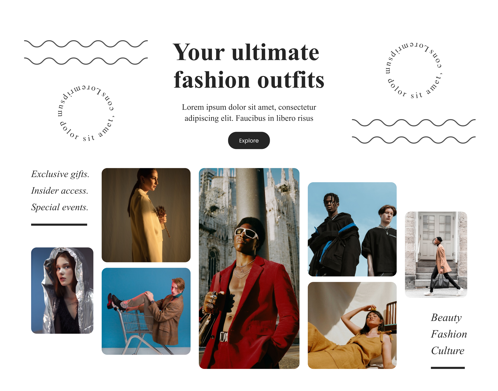

Projecte Figma - Prototip 23
Galeria · Omar Ayaou
Galeria
Prototips
Per què nosaltres?
Contacte
Prototip 23
Aquest és un prototip sobre fashion i moda contemporània

Prototips destacats
Prototip Plantes
Prototip Racisme digital
Prototip Innovador
← Prototip anterior
Prototip següent →